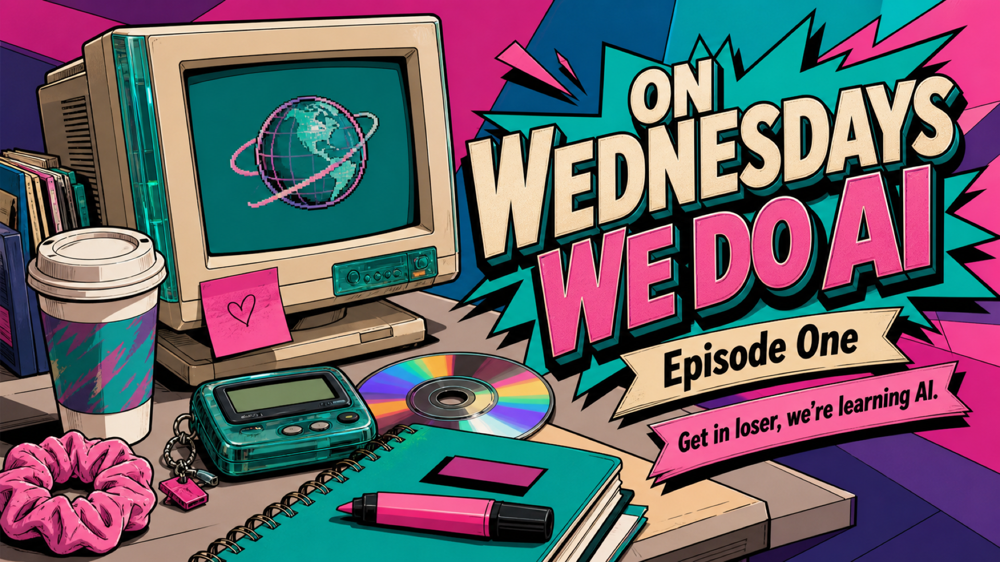
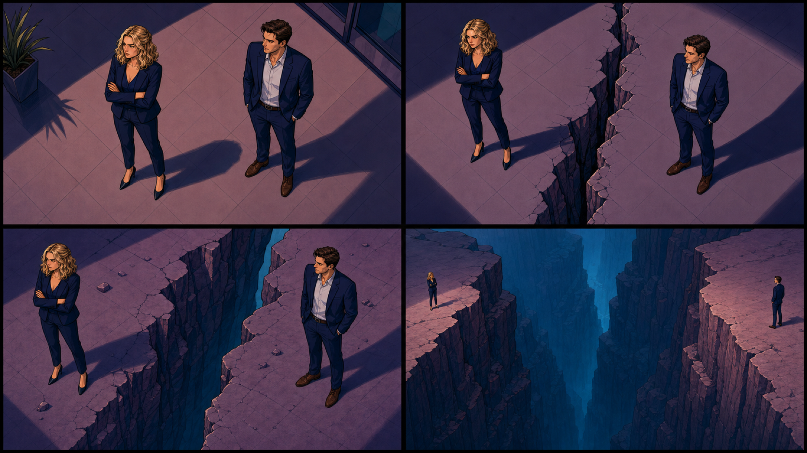
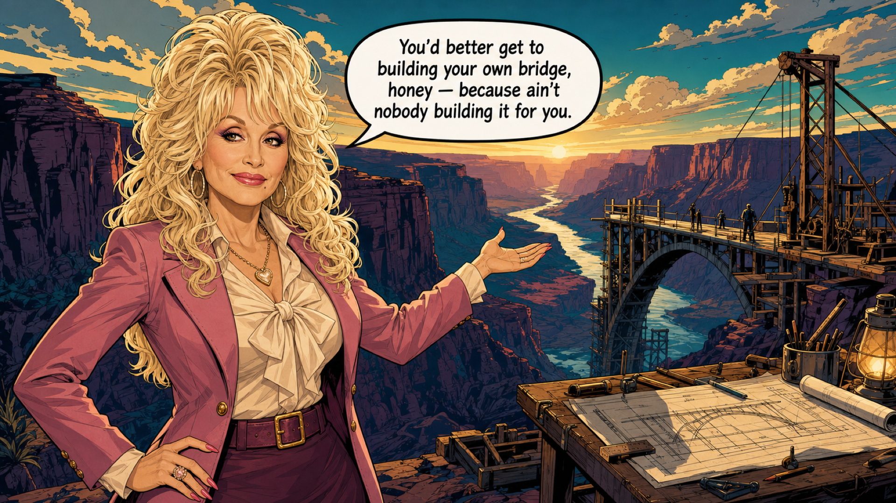
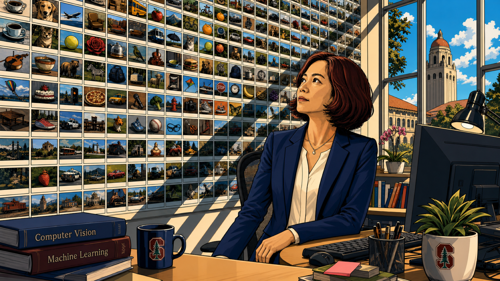
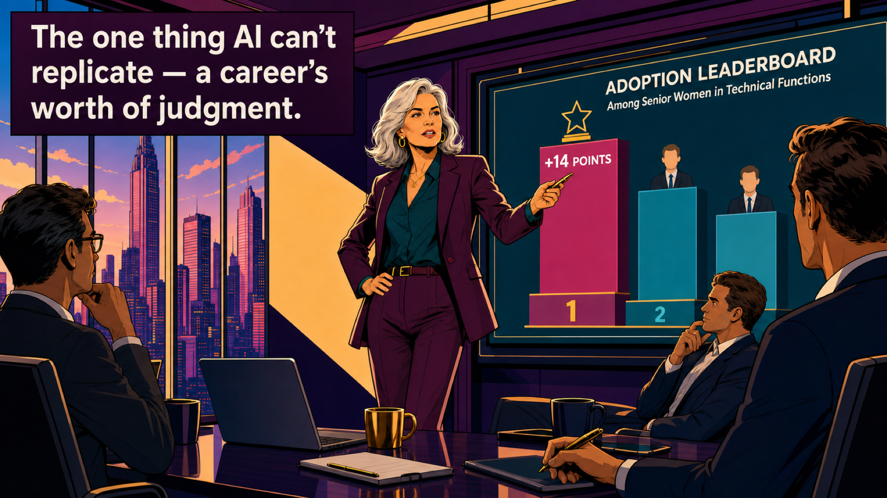
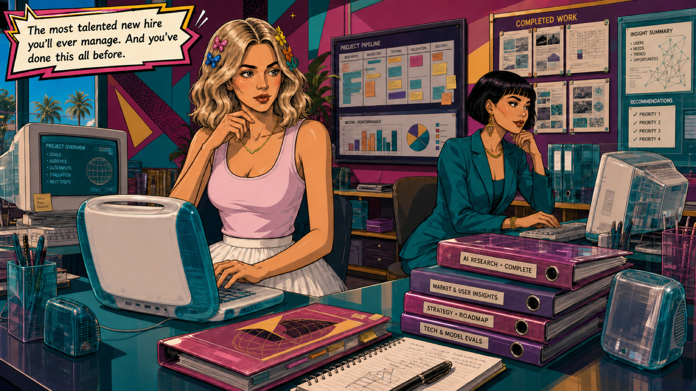
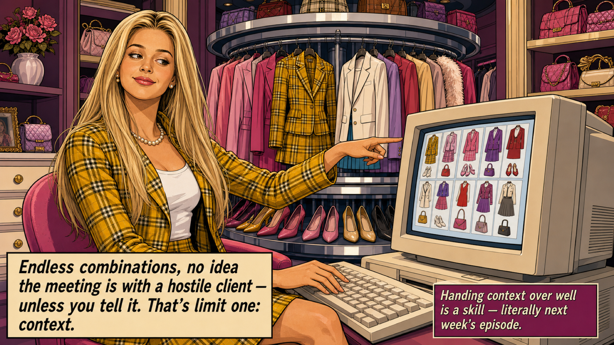
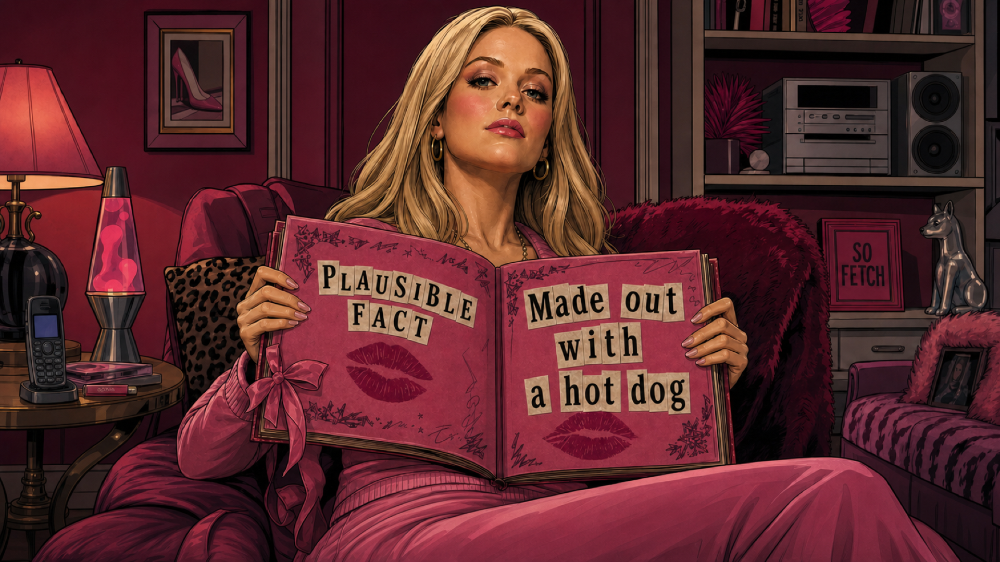
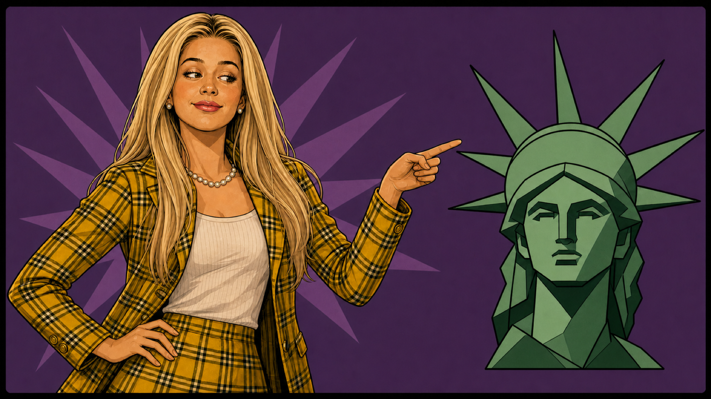

▶ New here? Start on a Wednesday
This is the pilot — no previous episode to recap, just the part where she stops waiting for a free weekend. A 24-episode season, one new Episode every Wednesday, each skill building on the last. By the finale you'll have built your own squad of AI employees, each named for a woman from our favourite era. Get in loser, we're learning AI — one Wednesday at a time.

…why every AI resource I found was either written by men in fleece vests (say no more), or so surface-level it basically amounted to "AI is transformative!" AI is transformative? Groundbreaking.
It's 4:52 on a Tuesday and a man named Steve just got called a visionary for a clean, confident analysis everyone in the room knows took him about an hour. Your version had footnotes and two weekends behind it — and it's still in your drafts, waiting to feel "ready." He isn't smarter. He just stopped doing it the hard way. When did everyone learn to do that? And when, exactly, was I supposed to?
I have a full-time job, a team to manage, and a calendar that's perpetually a Tetris game I'm losing. Adding "become AI-literate" to that pile felt about as realistic as Miranda Priestly asking me to fetch the unpublished Harry Potter manuscript. Technically possible — but at what personal cost?
So eventually I stopped waiting and started tinkering. I built something small that actually helped with my real job. It wasn't pretty. It definitely wasn't perfect. But it worked well enough to make me realize: oh. I can do this. The thing stopping me wasn't ability. It was that nobody had explained it in a way that made me want to start.
Written by Men in Fleece Vests
I started LAiDIES because the on-ramp I needed didn't exist. Everything was either too technical (written for people who wanted to build models, not use them), too shallow (listicles with all the nutritional value of a rice cake), or too time-consuming (40-hour courses marketed to people who apparently don't have jobs, children, or a standing Thursday happy hour with friends).
So I made something different. Posted every Wednesday, written for women in corporate roles who are already competent, already busy, and just need someone to explain this in a way that connects to actual work rather than theoretical computer science. Think of it like Elle Woods' approach to Harvard Law: she didn't show up knowing everything. She showed up underestimated, learned the system faster than anyone expected, and won because she brought a different kind of intelligence nobody in that room had thought to apply. If any of that sounds familiar: get in loser, we're learning AI.
It's Not a Confidence Problem. It's a Physics Problem.

The commentary loves to blame confidence and imposter syndrome. That's not what I experienced, and it's not what I hear from the women I talk to. What I hear is: I'm already drowning, I have no idea where to start, and even if I did — when exactly am I supposed to do this?
You cannot add hours to a day that's already over-subscribed. And women in corporate roles are already carrying more context, more logistics, more emotional labor, more "office housework" than their male peers. You know how there's always one person who preps the deck, remembers last time's feedback, follows up on the action items nobody else tracked, and still delivers her own work on time? That person is usually not named Steve.
Lean In's 2026 survey gets into the uncomfortable specifics: men are about 23% more likely to be encouraged by managers to use AI, about 27% more likely to be praised for it — and women are about 32% more likely to worry that using AI looks like cutting corners. That last one hit like Samantha Jones delivering a hard truth over brunch. It's not imposter syndrome. It's pattern recognition. (Ironic, given what AI actually is — but we'll get there.)
And here's the cruel part: the tool that could give you time back requires time you don't have to learn. So you don't start. The gap compounds week over week. And a year from now the distance between you and the colleague who started six months ago isn't a gap. It's a canyon.
Dolly Was Right

"You'd better get to building your own bridge, honey — because ain't nobody building it for you."
Dolly Parton energy
This isn't about becoming technical. It's about not leaving a genuinely useful tool sitting unopened on your desk while everyone else figures out what it can do. The bridge is yours to build — and the good news is you can start with one plank.
A Future Built by Half the Population

Fei-Fei Li, the Stanford professor the world calls the "Godmother of AI" — a media nickname she's distanced herself from, not a title she claims — put the stakes plainly:
"If we don't get women involved in AI, we're going to have a future that's built by half the population, for all of the population."
Fei-Fei Li, Stanford AI Lab
And this isn't just about fairness. When women don't use the tools, the tools learn from a skewed pool of users and literally get worse for women — the less women use them, the less they work for women, and the cycle keeps going. Getting women involved in AI isn't charity. It makes the technology better for all of us.
The Gap Is a Starting Line, Not a Finish Line

Wait — didn't we just say women use AI less? We did, and it's still true. Both facts fit together once you see which women, at which stage. The gap is widest for women earlier in their careers. But zoom in on the senior women who pushed past that first awkward phase, and it reverses.
The women who begin now are the ones who end up in front — because they bring the one thing AI cannot replicate: a career's worth of judgment. The instinct that something's off in a document before you can even articulate why.
Oh. I Can Do This.
Here's what it actually looks like when you start. A Sunday at the Blend & Snap. There's an email you've dreaded for four days — the delicate one, to the stakeholder who reads tone into your line breaks. You open the tab and tell AI the truth: who it's for, what you need from them, and the part you can't say out loud.
A draft comes back in nine seconds. It's 80% right — and the other 20% is wrong in ways only you can see. So you fix it with your own judgment and hit send. Four days of dread, eleven minutes of work. The work didn't get worse. It got done faster, and the time you got back is yours. That's the whole reframe: the thing stopping you was never ability. It was that nobody had made you want to start.
The Most Talented New Hire You'll Ever Manage

Imagine someone who has absorbed an enormous amount of human writing — books, articles, forums, manuals, billions of documents — but has never lived a single day of real life. No job, no relationships, no consequences. They sound incredibly knowledgeable because they've absorbed how language works, how ideas connect, how arguments are built. But they don't understand any of it the way you do — through experience, through getting things wrong, through building judgment one decision at a time over a career.
So the honest picture isn't a robot genius, and it isn't a toy. It's the most talented new hire you'll ever manage: superhuman range, astonishing speed, first drafts that'll genuinely scare you — and zero lived judgment, no sense of your office politics, no stake in what happens if it's wrong. That's where you come in. You onboard it, you manage it, you review its work. And you've done this all before.
Under the hood, when you type into ChatGPT, Claude, or Gemini, what it's doing is prediction — generating what comes next, word by word, from everything it absorbed in training. What grew out of all that prediction is impressive enough that the experts can't even agree what to call it, or whether "reasoning" is the right word. But two limits aren't up for debate — and they're the two that decide whether it helps you or embarrasses you.
Cher's Closet Can't See the Room

Limit one: it doesn't know your context until you hand it over. Think of Cher's closet computer from Clueless — it can generate outfit combinations all day long, but it has no idea the meeting is with a conservative client already looking for a reason to dismiss you… unless you tell it. That contextual judgment lives with you, and handing it over well is a skill — it's literally next week's episode. It's the Louboutins of professional life: anyone can buy the shoe, but not everyone knows how to walk in it.
The Burn Book Problem

Limit two: AI can be confidently, spectacularly wrong. Out of the box it doesn't verify whether what it generates is true — it only knows whether it's plausible. It's the Burn Book from Mean Girls: a collection of observations written with absolute authority, some accurate, some completely fabricated, all delivered with the same unbothered confidence. "Made out with a hot dog" would land with the exact same certainty as an actual fact, because it has no mechanism for telling the two apart. Regina George energy, but make it software.
Your job is knowing which parts to trust and which to push back on. You've been doing that with other people's work your entire career. This is no different.
Don't Pull a Cher

The thing to avoid is pulling a Cher — confidently, wrongly insisting it says "R.S.V.P." on the Statue of Liberty. Confidence is not correctness, in a group chat or in a chatbot. So use AI for its superhuman range and speed, hand it your real context, and keep your own judgment on the 20% only you can see. You don't need a technical background. You need someone to explain it clearly and a group of women to figure it out with. That's this. One Wednesday at a time.
Say it at happy hour
"So… what IS AI?"
It read everything. It's lived nothing. And it never says "I don't know." That's the line — three beats, it fits in the lull before the drinks arrive. The honest picture isn't a robot genius and it isn't a toy: it's the most talented new hire you'll ever manage. And you've done this all before.
So remember, ladies…
You'll need more than a cup of ambition to keep up in the male-dominated world of AI. Lucky for you, this series comes in small sips.
Got a sharper "remember, ladies" line that would make Dolly proud? Post it in the rooms — our residents-only chats at the sorority house. Your Resident Card gets you in the door, and favourites get featured, with credit. We're trailblazers here, not idea thieves.
Next week on LAiDIES
Episode 02 · Tell Me What You Want
She learns to actually talk to AI so it gives her something useful back. Turns out prompting is just delegation — and she already knows how to do that. See you next Wednesday, in SUNNYVAiLE.
Your scene · the try-on
Get in, loser. We're learning AI.
Open ChatGPT, Claude, and Gemini and give all three the same small, real task — the avoided email, or your version of it. Tell them the truth about who it's for and what you need, then compare the drafts that come back. They won't match (that's the editors-in-chief thing). One will win today's task; a different one might win next week's. And in every draft, notice the twenty percent only you can see. Ten minutes counts when it's pointed at a real thing you actually need.
Open the Study Pack →The Vocab
Generative AIA Carrie Bradshaw in your laptop — one that writes the column, not one that finds it.+
Think of it like having a Carrie Bradshaw in your laptop. Not one that finds you articles to read (that's Google) — one that actually writes the column for you. Generative AI creates new content — text, images, code, summaries, first drafts — instead of just searching, sorting, or analyzing what already exists. In most office conversations in 2026, when someone says "AI," this is what they mean.
ModelThe apps are the magazines; the model is the editor-in-chief powering each one.+
ChatGPT, Claude, and Gemini are products — the apps you open. The model is the trained brain powering each one. Same way Vogue, Elle, and Harper's Bazaar are all fashion magazines, but each has a different editor-in-chief with different taste, judgment, and style. Give the same brief to all three and you get back wildly different results — that's the model difference. (ChatGPT runs on GPT models from OpenAI. Claude runs on Anthropic's models. Gemini is Google's.)
HallucinationConfident, polished, and wrong — your most confident friend, with no receipts.+
When AI produces something that sounds confident and polished but is factually wrong or completely made up. It's not lying — lying requires intent. It just has no built-in "hold on, do we have receipts for this?" check. Think of your most confident friend who'll answer any question with total authority whether she actually knows or not — the Burn Book from Mean Girls. ("I'm not a regular mom, I'm a cool mom" — AI misreading the room, every single time.)